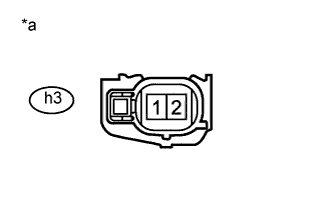

DTC P0327 Низкий уровень сигнала на входе цепи датчика детонации 1 (ряд 1 или отдельный датчик) |
DTC P0328 Высокий уровень сигнала на входе цепи датчика детонации 1 (ряд 1 или отдельный датчик) |
| № DTC | Условие обнаружения DTC | Неисправный участок |
| P0327 | Выходное напряжение датчика детонации составляет менее 0,5 В (логика диагностирования за 1 поездку). |
|
| P0328 | Выходное напряжение датчика детонации составляет более 4,5 В (логика диагностирования за 1 поездку). |
|
| Параметр / Устройство | Описание |
| Название контакта ECM | KNK1 - EKNK |
| Рабочий диапазон диагностического прибора | 1 В/дел., 1 мс/ дел. |
| Условие | Частота вращения коленчатого вала после прогрева двигателя поддерживается равной 4000 об/мин |
| 1.СНИМИТЕ ПОКАЗАНИЯ ПОРТАТИВНОГО ДИАГНОСТИЧЕСКОГО ПРИБОРА (KNOCK FEEDBACK VALUE) |
Подсоедините портативный диагностический прибор к DLC3.
Запустите двигатель.
Включите портативный диагностический прибор.
Прогрейте двигатель.
Войдите в следующие меню: Powertrain / Engine and ECT / Data List / Knock Feedback Value.
Считайте значения, отображаемые на экране диагностического прибора во время движения автомобиля.
| Неисправность не проявляется | Значения обратной связи о детонации изменяются |
| Неисправность проявляется | Значения обратной связи о детонации не изменяются |
|
| ||||
| OK | ||
| ||
| 2.ПРОВЕРЬТЕ ECM (НАПРЯЖЕНИЕ KNK1) |
|  |
Отсоедините разъемы датчика детонации.
Измерьте напряжение в соответствии со значениями, приведенными в таблице.
| Контакты для подключения диагностического прибора | Положение переключателя | Заданные условия |
| h3-2 - h3-1 | Зажигание включено | 4,5-5,5 В |
| *a | Вид спереди разъема со стороны жгута проводов: (к датчику детонации) |
Подсоедините разъем датчика детонации.
|
| ||||
| OK | |
| 3.ПРОВЕРЬТЕ ДАТЧИК ДЕТОНАЦИИ |
Проверьте датчик детонации (Нажмите здесь).
|
| ||||
| OK | ||
| ||
| 4.ПРОВЕРЬТЕ ЖГУТ ПРОВОДОВ И РАЗЪЕМ (ЕСМ - ДАТЧИК ДЕТОНАЦИИ) |
Отсоедините разъемы датчика детонации.
Отсоедините разъем ЭБУ.
Измерьте сопротивление в соответствии со значениями, приведенными в таблице ниже.
| Подключение диагностического прибора | Условие | Заданные условия |
| h3-2 - C61-6 (KNK1) | Всегда | Менее 1 Ом |
| h3-1 - C61-5 (EKNK) | Всегда | Менее 1 Ом |
| Подключение диагностического прибора | Условие | Заданные условия |
| h3-2 или C61-6 (KNK1) - масса | Всегда | 10 кОм или более |
| h3-1 или C61-5 (EKNK) - масса | Всегда | 10 кОм или более |
Подсоедините разъем датчика детонации.
Подсоедините разъем ECM.
|
| ||||
| OK | ||
| ||